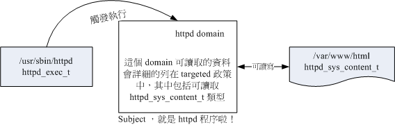
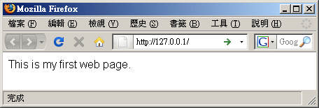
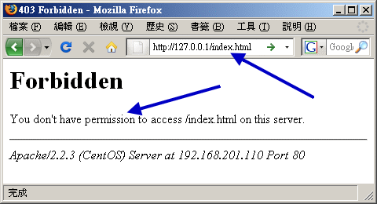

在进入了 CentOS 5.x 之后，SELinux 已经是个非常完备的核心模块了！CentOS 5.x 提供了很多管理 SELinux 的命令与机制，
因此在整体架构上面比以前的版本要单纯且容易操作管理！所以，在这一版以后，我们建议大家千万不要关掉 SELinux 这玩意儿！
让我们来仔细的玩玩这家伙吧！
 什么是 SELinux
什么是 SELinux
什么是 SELinux 呢？其实他是『 Security Enhanced Linux
』的缩写，字面上的意义就是安全强化的 Linux 之意！那么所谓的『安全强化』是强化哪个部分？
是网络资安还是权限管理？底下就让我们来谈谈吧！
SELinux 是由美国国家安全局 (NSA) 开发的，当初开发这玩意儿的目的是因为很多企业界发现，
通常系统出现问题的原因大部分都在於『内部员工的资源误用』所导致的，实际由外部发动的攻击反而没有这么严重。
那么什么是『员工资源误用』呢？举例来说，如果有个不是很懂系统的系统管理员为了自己配置的方便，将网页所在目录
/var/www/html/ 的权限配置为 drwxrwxrwx 时，你觉得会有什么事情发生？
现在我们知道所有的系统资源都是透过程序来进行存取的，那么 /var/www/html/ 如果配置为 777 ，
代表所有程序均可对该目录存取，万一你真的有启动 WWW 服务器软件，那么该软件所触发的程序将可以写入该目录，
而该程序却是对整个 Internet 提供服务的！只要有心人接触到这支程序，而且该程序刚好又有提供使用者进行写入的功能，
那么外部的人很可能就会对你的系统写入些莫名其妙的东西！那可真是不得了！一个小小的 777 问题可是大大的！
为了控管这方面的权限与程序的问题，所以美国国家安全局就著手处理操作系统这方面的控管。
由於 Linux 是自由软件，程序码都是公开的，因此她们便使用 Linux 来作为研究的目标，
最后更将研究的结果整合到 Linux 核心里面去，那就是 SELinux 啦！所以说， SELinux 是整合到核心的一个模块喔！
更多的 SELinux 相关说明可以参考：
这也就是说：其实 SELinux 是在进行程序、文件等细部权限配置依据的一个核心模块！
由於启动网络服务的也是程序，因此刚好也能够控制网络服务能否存取系统资源的一道关卡！
所以，在讲到 SELinux 对系统的存取控制之前，我们得先来回顾一下之前谈到的系统文件权限与使用者之间的关系。
因为先谈完这个你才会知道为何需要 SELinux 的啦！
- 传统的文件权限与帐号关系：自主式存取控制, DAC
我们第十四章的内容，知道系统的帐号主要分为系统管理员
(root) 与一般用户，而这两种身份能否使用系统上面的文件资源则与 rwx 的权限配置有关。
不过你要注意的是，各种权限配置对 root 是无效的。因此，当某个程序想要对文件进行存取时，
系统就会根据该程序的拥有者/群组，并比对文件的权限，若通过权限检查，就可以存取该文件了。
这种存取文件系统的方式被称为『自主式存取控制 (Discretionary Access Control,
DAC)』，基本上，就是依据程序的拥有者与文件资源的 rwx 权限来决定有无存取的能力。
不过这种 DAC 的存取控制有几个困扰，那就是：
- root 具有最高的权限：如果不小心某支程序被有心人士取得，
且该程序属於 root 的权限，那么这支程序就可以在系统上进行任何资源的存取！真是要命！
- 使用者可以取得程序来变更文件资源的存取权限：如果你不小心将某个目录的权限配置为
777 ，由於对任何人的权限会变成 rwx ，因此该目录就会被任何人所任意存取！
这些问题是非常严重的！尤其是当你的系统是被某些漫不经心的系统管理员所掌控时！她们甚至觉得目录权限调为 777
也没有什么了不起的危险哩...
- 以政策守则订定特定程序读取特定文件：委任式存取控制, MAC
现在我们知道 DAC 的困扰就是当使用者取得程序后，他可以藉由这支程序与自己默认的权限来处理他自己的文件资源。
万一这个使用者对 Linux 系统不熟，那就很可能会有资源误用的问题产生。为了避免 DAC 容易发生的问题，因此
SELinux 导入了委任式存取控制 (Mandatory Access Control, MAC) 的方法！
委任式存取控制 (MAC) 有趣啦！他可以针对特定的程序与特定的文件资源来进行权限的控管！
也就是说，即使你是 root ，那么在使用不同的程序时，你所能取得的权限并不一定是 root ，
而得要看当时该程序的配置而定。如此一来，我们针对控制的『主体』变成了『程序』而不是使用者喔！
此外，这个主体程序也不能任意使用系统文件资源，因为每个文件资源也有针对该主体程序配置可取用的权限！
如此一来，控制项目就细的多了！但整个系统程序那么多、文件那么多，一项一项控制可就没完没了！
所以 SELinux 也提供一些默认的政策 (Policy) ，并在该政策内提供多个守则 (rule) ，让你可以选择是否激活该控制守则！
在委任式存取控制的配置下，我们的程序能够活动的空间就变小了！举例来说， WWW 服务器软件的达成程序为 httpd 这支程序，
而默认情况下， httpd 仅能在 /var/www/ 这个目录底下存取文件，如果 httpd 这个程序想要到其他目录去存取数据时，
除了守则配置要开放外，目标目录也得要配置成 httpd 可读取的模式 (type) 才行喔！限制非常多！
所以，即使不小心 httpd 被 cracker 取得了控制权，他也无权浏览 /etc/shadow 等重要的配置档喔！
SELinux 的运行模式
再次的重复说明一下，SELinux 是透过 MAC 的方式来控管程序，他控制的主体是程序，
而目标则是该程序能否读取的『文件资源』！所以先来说明一下这些咚咚的相关性啦！(注4)
- 主体 (Subject)：
SELinux 主要想要管理的就是程序，因此你可以将『主体』跟本章谈到的 process 划上等号；
- 目标 (Object)：
主体程序能否存取的『目标资源』一般就是文件系统。因此这个目标项目可以等文件系统划上等号；
- 政策 (Policy)：
由於程序与文件数量庞大，因此 SELinux 会依据某些服务来制订基本的存取安全性政策。这些政策内还会有详细的守则 (rule)
来指定不同的服务开放某些资源的存取与否。在目前的 CentOS 5.x 里面仅有提供两个主要的政策，分别是：
- targeted：针对网络服务限制较多，针对本机限制较少，是默认的政策；
- strict：完整的 SELinux 限制，限制方面较为严格。
建议使用默认的 targeted 政策即可。
- 安全性本文 (security context)：
我们刚刚谈到了主体、目标与政策面，但是主体能不能存取目标除了政策指定之外，主体与目标的安全性本文必须一致才能够顺利存取。
这个安全性本文 (security context) 有点类似文件系统的 rwx 啦！安全性本文的内容与配置是非常重要的！
如果配置错误，你的某些服务(主体程序)就无法存取文件系统(目标资源)，当然就会一直出现『权限不符』的错误信息了！

图 5.2.1、SELinux 运行的各组件之相关性(本图参考小州老师的上课讲义)
上图的重点在『主体』如何取得『目标』的资源存取权限！
由上图我们可以发现，主体程序必须要通过 SELinux 政策内的守则放行后，就可以与目标资源进行安全性本文的比对，
若比对失败则无法存取目标，若比对成功则可以开始存取目标。问题是，最终能否存取目标还是与文件系统的 rwx
权限配置有关喔！如此一来，加入了 SELinux 之后，出现权限不符的情况时，你就得要一步一步的分析可能的问题了！
CentOS 5.x 已经帮我们制订好非常多的守则了，这部份你只要知道如何开启/关闭某项守则的放行与否即可。
那个安全性本文比较麻烦！因为你可能需要自行配置文件的安全性本文呢！为何需要自行配置啊？
举例来说，你不也常常进行文件的 rwx 的重新配置吗？这个安全性本文你就将他想成
SELinux 内必备的 rwx 就是了！这样比较好理解啦。
安全性本文存在於主体程序中与目标文件资源中。程序在内存内，所以安全性本文可以存入是没问题。
那文件的安全性本文是记录在哪里呢？事实上，安全性本文是放置到文件的 inode
内的，因此主体程序想要读取目标文件资源时，同样需要读取 inode ，
这 inode 内就可以比对安全性本文以及 rwx 等权限值是否正确，而给予适当的读取权限依据。
那么安全性本文到底是什么样的存在呢？我们先来看看 /root 底下的文件的安全性本文好了。
观察安全性本文可使用『 ls -Z 』去观察如下：(注意：你必须已经启动了 SELinux
才行！若尚未启动，这部份请稍微看过一遍即可。底下会介绍如何启动 SELinux 喔！)
[root@www ~]# ls -Z
drwxr-xr-x root root root:object_r:user_home_t Desktop
-rw-r--r-- root root root:object_r:user_home_t install.log
-rw-r--r-- root root root:object_r:user_home_t install.log.syslog
# 上述特殊字体的部分，就是安全性本文的内容！
|
如上所示，安全性本文主要用冒号分为三个栏位，这三个栏位的意义为：
Identify:role:type
身份识别:角色:类型
|
这三个栏位的意义仔细的说明一下吧：
- 身份识别 (Identify)：
相当於帐号方面的身份识别！主要的身份识别则有底下三种常见的类型：
- root：表示 root 的帐号身份，如同上面的表格显示的是 root 家目录下的数据啊！
- system_u：表示系统程序方面的识别，通常就是程序罗；
- user_u：代表的是一般使用者帐号相关的身份。
你会发现身份识别中，除了 root 之外，其他的识别后面都会加上『 _u 』的字样呢！
这个身份识别重点再让我们了解该数据为何种身份所有哩～
而系统上面大部分的数据都会是 system_u 或 root 啦！至於如果是在 /home 底下的数据，那么大部分应该就会是 user_u 罗！
- 角色 (Role)：
透过角色栏位，我们可以知道这个数据是属於程序、文件资源还是代表使用者。一般的角色有：
- object_r：代表的是文件或目录等文件资源，这应该是最常见的罗；
- system_r：代表的就是程序啦！不过，一般使用者也会被指定成为 system_r 喔！
你也会发现角色的栏位最后面使用『 _r 』来结尾！因为是 role 的意思嘛！
- 类型 (Type) ：(最重要！)
在默认的 targeted 政策中， Identify 与 Role 栏位基本上是不重要的！重要的在於这个类型 (type) 栏位！
基本上，一个主体程序能不能读取到这个文件资源，与类型栏位有关！而类型栏位在文件与程序的定义不太相同，分别是：
- type：在文件资源 (Object) 上面称为类型 (Type)；
- domain：在主体程序 (Subject) 则称为领域 (domain) 了！
domain 需要与 type 搭配，则该程序才能够顺利的读取文件资源啦！
- 程序与文件 SELinux type 栏位的相关性
那么这三个栏位如何利用呢？首先我们来瞧瞧主体程序在这三个栏位的意义为何！透过身份识别与角色栏位的定义，
我们可以约略知道某个程序所代表的意义喔！基本上，这些对应数据在 targeted 政策下的对应如下：
| 身份识别 | 角色 | 该对应在 targeted 的意义 |
| root | system_r | 代表供 root 帐号登陆时所取得的权限 |
| system_u | system_r | 由於为系统帐号，因此是非交谈式的系统运行程序 |
| user_u | system_r | 一般可登陆使用者的程序罗！ |
但就如上所述，其实最重要的栏位是类型栏位，主体与目标之间是否具有可以读写的权限，与程序的 domain 及文件的
type 有关！这两者的关系我们可以使用达成 WWW 服务器功能的 httpd 这支程序与 /var/www/html 这个网页放置的目录来说明。
首先，看看这两个咚咚的安全性本文内容先：
[root@www ~]# ll -Zd /usr/sbin/httpd /var/www/html
-rwxr-xr-x root root system_u:object_r:httpd_exec_t /usr/sbin/httpd
drwxr-xr-x root root system_u:object_r:httpd_sys_content_t /var/www/html
# 两者的角色栏位都是 object_r ，代表都是文件！而 httpd 属於 httpd_exec_t 类型，
# /var/www/html 则属於 httpd_sys_content_t 这个类型！
|
httpd 属於 httpd_exec_t 这个可以运行的类型，而 /var/www/html 则属於 httpd_sys_content_t 这个可以让
httpd 领域 (domain) 读取的类型。文字看起来不太容易了解吧！我们使用图示来说明这两者的关系！

图 5.2.2、主体程序取得的 domain 与目标文件资源的 type 相互关系
上图的意义我们可以这样看的：
- 首先，我们触发一个可运行的目标文件，那就是具有 httpd_exec_t 这个类型的 /usr/sbin/httpd 文件；
- 该文件的类型会让这个文件所造成的主体程序 (Subject) 具有 httpd 这个领域 (domain)，
我们的政策针对这个领域已经制定了许多守则，其中包括这个领域可以读取的目标资源类型；
- 由於 httpd domain 被配置为可以读取 httpd_sys_content_t 这个类型的目标文件 (Object)，
因此你的网页放置到 /var/www/html/ 目录下，就能够被 httpd 那支程序所读取了；
- 但最终能不能读到正确的数据，还得要看 rwx 是否符合 Linux 权限的规范！
上述的流程告诉我们几个重点，第一个是政策内需要制订详细的 domain/type 相关性；第二个是若文件的 type 配置错误，
那么即使权限配置为 rwx 全开的 777 ，该主体程序也无法读取目标文件资源的啦！不过如此一来，
也就可以避免使用者将他的家目录配置为 777 时所造成的权限困扰。
SELinux 的启动、关闭与观察
并非所有的 Linux distributions 都支持 SELinux 的，所以你必须要先观察一下你的系统版本为何！
鸟哥这里介绍的 CentOS 5.x 本身就有支持 SELinux 啦！所以你不需要自行编译 SELinux 到你的 Linux 核心中！
目前 SELinux 支持三种模式，分别如下：
- enforcing：强制模式，代表 SELinux 运行中，且已经正确的开始限制 domain/type 了；
- permissive：宽容模式：代表 SELinux 运行中，不过仅会有警告信息并不会实际限制
domain/type 的存取。这种模式可以运来作为 SELinux 的 debug 之用；
- disabled：关闭，SELinux 并没有实际运行。
那你怎么知道目前的 SELinux 模式呢？就透过 getenforce 吧！
[root@www ~]# getenforce
Enforcing <==诺！就显示出目前的模式为 Enforcing 罗！
|
另外，我们又如何知道 SELinux 的政策 (Policy) 为何呢？这时可以使用 sestatus 来观察：
[root@www ~]# sestatus [-vb]
选项与参数：
-v ：检查列於 /etc/sestatus.conf 内的文件与程序的安全性本文内容；
-b ：将目前政策的守则布林值列出，亦即某些守则 (rule) 是否要启动 (0/1) 之意；
范例一：列出目前的 SELinux 使用哪个政策 (Policy)？
[root@www ~]# sestatus
SELinux status: enabled <==是否启动 SELinux
SELinuxfs mount: /selinux <==SELinux 的相关文件数据挂载点
Current mode: enforcing <==目前的模式
Mode from config file: enforcing <==配置档指定的模式
Policy version: 21
Policy from config file: targeted <==目前的政策为何？
|
如上所示，目前是启动的，而且是 Enforcing 模式，而由配置档查询得知亦为 Enforcing 模式。
此外，目前的默认政策为 targeted 这一个。你应该要有疑问的是， SELinux 的配置档是哪个文件啊？
其实就是 /etc/selinux/config 这个文件喔！我们来看看内容：
[root@www ~]# vi /etc/selinux/config
SELINUX=enforcing <==调整 enforcing|disabled|permissive
SELINUXTYPE=targeted <==目前仅有 targeted 与 strict
|
上面是默认的政策与启动的模式！你要注意的是，如果改变了政策则需要重新启动；如果由 enforcing 或 permissive
改成 disabled ，或由 disabled 改成其他两个，那也必须要重新启动。这是因为 SELinux 是整合到核心里面去的，
你只可以在 SELinux 运行下切换成为强制 (enforcing) 或宽容 (permissive) 模式，不能够直接关闭 SELinux 的！
同时，由 SELinux 关闭 (disable) 的状态到开启的状态也需要重新启动啦！所以，如果刚刚你发现 getenforce 出现 disabled 时，
请到上述文件修改成为 enforcing 吧！
所以，如果你要启动 SELinux 的话，请将上述的 SELINUX=enforcing 配置妥当，并且指定 SELINUXTYPE=targeted 这一个配置，
并且到 /boot/grub/menu.lst 这个文件去，看看核心有无关闭 SELinux 了呢？
[root@www ~]# vi /boot/grub/menu.lst
default=0
timeout=5
splashimage=(hd0,0)/grub/splash.xpm.gz
hiddenmenu
title CentOS (2.6.18-92.el5)
root (hd0,0)
kernel /vmlinuz-2.6.18-92.el5 ro root=LABEL=/1 rhgb quiet selinux=0
initrd /initrd-2.6.18-92.el5.img
# 如果要启动 SELinux ，则不可以出现 selinux=0 的字样在 kernel 后面！
|
请注意到上面特殊字体的那一行，确认 kernel 后面不可以接『 selinux=0 』这个项目！因为 selinux=0 指定给核心时，
则核心会自动的忽略 /etc/selinux/config 的配置值，而直接略过 SELinux 的加载，所以你的 SELinux 模式就会变成 disabled
啦！因为我们要启动，所以这里得要确认不存在 selinux=0 才行！切记切记！
如果一切配置妥当，接下来就是 reboot 重新启动吧！
不过你要注意的是，如果从 disable 转到启动 SELinux 的模式时，
由於系统必须要针对文件写入安全性本文的资讯，因此启动过程会花费不少时间在等待重新写入 SELinux 安全性本文
(有时也称为 SELinux Label) ，而且在写完之后还得要再次的重新启动一次喔！你必须要等待粉长一段时间！
等到下次启动成功后，再使用 getenforce 或 sestatus
来观察看看有否成功的启动到 Enforcing 的模式罗！
如果你已经在 Enforcing 的模式，但是可能由於一些配置的问题导致 SELinux 让某些服务无法正常的运行，
此时你可以将 Enforcing 的模式改为宽容 (permissive) 的模式，让 SELinux 只会警告无法顺利连线的信息，
而不是直接抵挡主体程序的读取权限。让 SELinux 模式在 enforcing 与 permissive 之间切换的方法为：
[root@www ~]# setenforce [0|1]
选项与参数：
0 ：转成 permissive 宽容模式；
1 ：转成 Enforcing 强制模式
范例一：将 SELinux 在 Enforcing 与 permissive 之间切换与观察
[root@www ~]# setenforce 0
[root@www ~]# getenforce
Permissive
[root@www ~]# setenforce 1
[root@www ~]# getenforce
Enforcing
|
不过请注意， setenforce 无法在 Disabled 的模式底下进行模式的切换喔！
SELinux 网络服务运行范例
由於 CentOS 5.x 默认使用 targeted 这个政策，而这个政策主要是在管理网络服务，本机端的程序则比较不受 SELinux 的管制。
既然上头我们曾经举过 /usr/sbin/httpd 这个程序来当作范例，那么我们就使用 WWW 服务器来说明一下 SELinux
的运行方式吧。
首先，让我们启动 httpd 这支服务吧！要记得的是，一般服务启动的脚本会在 /etc/init.d/ 底下，
所以我们可以这样启动与观察：
# 1. 先启动这个网络服务吧！
[root@www ~]# /etc/init.d/httpd start
正在启动 httpd: [ 确定 ]
# 2. 观察有无此程序，并且观察此程序的 SELinux 安全性本文数据
[root@www ~]# pstree | grep httpd
|-httpd---8*[httpd] <==httpd 会产生很多子程序来负责网络服务喔！
[root@www ~]# ps aux -Z |grep http
root:system_r:httpd_t root 24089 0.2 1.2 22896 9256 ? Ss 16:06 0:00 /usr/sbin/httpd
root:system_r:httpd_t apache 24092 0.0 0.6 22896 4752 ? S 16:06 0:00 /usr/sbin/httpd
root:system_r:httpd_t apache 24093 0.0 0.6 22896 4752 ? S 16:06 0:00 /usr/sbin/httpd
....(后面省略)....
|
ps -Z 这个『 -Z 』的选项可以让我们查阅程序的安全性本文！其他相关的程序说明请自行查阅本章上面各节的内容。
我们可以发现这整个程序的 domain 是 httpd_t 这个咚咚喔！再来我们来处理一下首页的数据先。
由於首页是放置到 /var/www/html，且档名应该要是『 index.html 』，因此我们可以这样简单的制作首页：
[root@www ~]# echo "This is my first web page." > /var/www/html/index.html
|
接下来，如果你在浏览器上面输入『 http://127.0.0.1 』应该会看到如下的画面才对！

图 5.4.1、httpd 顺利运行时，能够看到的首页画面
此时你的浏览器会透过 httpd 这个程序拥有的 httpd_t 这个 domain 去读取 /var/www/html/index.html 这个文件的！
先来看看这个文件的权限与 SELinux 的安全性本文数据：
[root@www ~]# ll -Z /var/www/html/index.html
-rw-r--r-- root root root:object_r:httpd_sys_content_t /var/www/html/index.html
|
权限是 apache 可以读取的 r 标志，而 SELinux 则是 httpd_sys_content_t 的类型 (type)，也是 httpd_t 能读取的哩！
那么为何 httpd_t 可以读取呢？因为 targeted 政策里面有配置嘛！关於政策配置的查询我们可以在后续跟大家作介绍，
这里先了解一下即可。
让我们来了解一下什么是错误的安全性本文配置好了！现在，我们将重要的网页数据在 root 的家目录底下制作！
配置如下：
# 1. 先在 root 的家目录建置所需的首页：
[root@www ~]# echo "My 2nd web page..." > index.html
# 2. 将首页 index.html 『搬移』到 /var/www/html 目录去：
[root@www ~]# rm /var/www/html/index.html
[root@www ~]# mv index.html /var/www/html
# 这个测试的重点在 mv 这个命令的处理上！务必使用 mv 喔！
|
等到上述的动作都做完后，如果在浏览器输入 http://127.0.0.1/index.html ，你应该会想到画面会出现我们想要的『 My 2nd web
page...』才对，但是结果却变成：

图 5.4.2、错误的安全性本文所造成的困扰
记得要在网址列指定 index.html 否则出现的会变成欢迎首页的画面。而萤幕上出现的错误信息是没有权限
(You don't have permission...)。看看这个 /var/www/html/index.html 的权限吧！
[root@www ~]# ll -Z /var/www/html/index.html
-rw-r--r-- root root root:object_r:user_home_t /var/www/html/index.html
|
你会发现，权限是对的 (apache 使用者依旧可以读取)，但是安全性本文内容却是使用者家目录呢！
真是要命！这个使用者家目录默认可不能给 httpd_t 这个 domain 读取的！所以就产生错误啦！那该如何处置呢？
既然安全性本文是错的，那么就将他改回来即可嘛！怎么修改呢？可以透过两个命令喔！首先我们使用 chcon 来处理：
[root@www ~]# chcon [-R] [-t type] [-u user] [-r role] 文件
[root@www ~]# chcon [-R] --reference=范例档 文件
选项与参数：
-R ：连同该目录下的次目录也同时修改；
-t ：后面接安全性本文的类型栏位！例如 httpd_sys_content_t ；
-u ：后面接身份识别，例如 system_u；
-r ：后面街角色，例如 system_r；
--reference=范例档：拿某个文件当范例来修改后续接的文件的类型！
范例一：将刚刚的 index.html 类型改为 httpd_sys_content_t 的类型
[root@www ~]# chcon -t httpd_sys_content_t /var/www/html/index.html
[root@www ~]# ll -Z /var/www/html/index.html
-rw-r--r-- root root root:object_r:httpd_sys_content_t /var/www/html/index.html
# 瞧！这样就改回来啦！
范例二：以 /etc/passwd 为依据，将 index.html 修改成该类型
[root@www ~]# ll -Z /etc/passwd
-rw-r--r-- root root system_u:object_r:etc_t /etc/passwd
[root@www ~]# chcon --reference=/etc/passwd /var/www/html/index.html
[root@www ~]# ll -Z /var/www/html/index.html
-rw-r--r-- root root root:object_r:etc_t /var/www/html/index.html
# 看看！是否与上面的 /etc/passwd 相同了！不过，这又是错误的安全性本文！
# 先不要急著修改！我们来进行底下的另外一个命令处置看看！
|
chcon 是透过直接指定的方式来处理安全性本文的类型数据。那我们知道其实系统默认的目录都有特殊的 SELinux 安全性本文，
举例来说， /var/www/html 原本就是 httpd 可以读取的目录嘛！既然如此，那有没有可以使用默认的安全性本文来还原的方式？
有的，那就是 restorecon 这玩意儿：
[root@www ~]# restorecon [-Rv] 文件或目录
选项与参数：
-R ：连同次目录一起修改；
-v ：将过程显示到萤幕上
范例一：将刚刚错误的 index.html 以默认的安全性本文改正过来
[root@www ~]# restorecon -Rv /var/www/html/index.html
restorecon reset /var/www/html/index.html context system_u:object_r:etc_t:s0->
system_u:object_r:httpd_sys_content_t:s0
# 上面这两行其实是同一行喔！表示将 index.html 由 etc_t 改为 httpd_sys_content_t
|
然后回到刚刚图 5.4.2 给他重读一下，嘿嘿！又可以看到正确的内容啦！这个过程完全没有动到 rwx 权限，
因为该权限本来就是对的！而错的部分是在於 SELinux 的安全性本文当中那个类型 (type) 配置错误！
而配置错误的原因很可能是因为该文件由其他位置复制或移动过来所导致的！因此，
你得要善用 restorecon 以及 chcon 来处理这方面的问题喔！
SELinux 所需的服务
由於 SELinux 是整合到核心的一个核心功能，因此你几乎不需要启动什么额外的服务来开启 SELinux 的。
启动完成后， SELinux 就启动了。不过，你刚刚也发现到当我们复制或移动某些数据到特定的目录时，
可能由於没有注意到修改 SELinux 的安全性本文内容，结果导致网络服务无法顺利运行的问题！
有没有什么方法可以记录当发生 SELinux 错误时，将那些有用的资讯记录下来，并且提供解决的方案呢？
此时就得要底下的几个服务的辅助罗！
- setroubleshoot --> 错误信息写入 /var/log/messages
几乎所有 SELinux 相关的程序都会以 se 为开头，这个服务也是以 se 为开头！而 troubleshoot 大家都知道是错误克服，
因此这个 setroubleshoot 自然就得要启动他啦！这个服务会将关於 SELinux 的错误信息与克服方法记录到 /var/log/messages
里头，所以你一定得要启动这个服务才好。那如何在启动的时候就启动 setroubleshoot 呢？这样处理先：
[root@www ~]# chkconfig --list setroubleshoot
setroubleshoot 0:off 1:off 2:off 3:on 4:on 5:on 6:off
# 我们的 Linux 运行模式是在 3 或 5 号，因此这两个要 on 即可。
[root@www ~]# chkconfig setroubleshoot on
# 关於 chkconfig 我们会在后面章节介绍， --list 是列出目前的运行等级是否有启动，
# 如果加上 on ，则是在启动时启动，若为 off 则启动时不启动。
|
这支服务默认几乎都会启动啦！除非你看到 3:off 或 5:off 时，才需要以『 chkconfig setroubleshoot on 』
去配置一下。那么如果有发生错误时，信息像什么呢？我们刚刚不是以浏览器浏览 index.html 并导致错误吗？
那就将该错误捉来瞧瞧！
[root@www ~]# cat /var/log/messages | grep setroubleshoot
Mar 23 17:18:44 www setroubleshoot: SELinux is preventing the httpd from using
potentially mislabeled files (/var/www/html/index.html). For complete SELinux
messages. run sealert -l 6c028f77-ddb6-4515-91f4-4e3e719994d4
|
上面的错误信息可是同一行喔！大纲说的是『SElinux 被用来避免 httpd 读取到错误的安全性本文，
想要查阅完整的数据，请运行 sealert -l 6c02...』没错！你注意到了！重点就是 sealert -l 啦！
上面提供的资讯并不完整，想要更完整的说明得要靠 sealert 配合侦测到的错误代码来处理。
实际处理后会像这样：
[root@www ~]# sealert -l 6c028f77-ddb6-4515-91f4-4e3e719994d4
Summary:
SELinux is preventing the httpd from using potentially mislabeled files
(/var/www/html/index.html). <==就是刚刚 /var/log/messages 的信息
Detailed Description: <==底下是更完整的描述！要看！
SELinux has denied httpd access to potentially mislabeled file(s)
(/var/www/html/index.html). This means that SELinux will not allow httpd to use
these files. It is common for users to edit files in their home directory or tmp
directories and then move (mv) them to system directories. The problem is that
the files end up with the wrong file context which confined applications are not
allowed to access.
Allowing Access: <==若要允许存取，你需要进行的动作！
If you want httpd to access this files, you need to relabel them using
restorecon -v '/var/www/html/index.html'. You might want to relabel the entire
directory using restorecon -R -v '/var/www/html'.
....(底下省略)....
|
重点就是上面特殊字体显示的地方！你只要照著『Allowing Access』里面的提示去进行处理，
就能够完成你的 SELinux 类型配置了！比对刚刚我们上个小节提到的 restorecon
与 chcon 你就能够知道， setroubleshoot 提供的信息有多有效了吧！
- auditd --> 详细数据写入 /var/log/audit/audit.log
audit 是稽核的意思，这个 auditd 会将 SELinux 发生的错误资讯写入 /var/log/audit/audit.log 中！
与上个服务相同的，你最好在启动时就配置这服务为启动的模式，因此可以照样造句：
[root@www ~]# chkconfig --list auditd
auditd 0:off 1:off 2:on 3:on 4:on 5:on 6:off
[root@www ~]# chkconfig auditd on
# 若 3:off 及 5:off 时，才需要进行！
|
与 setroubleshoot 不同的是， auditd 会将许多的 SELinux 资讯都记录下来，不只是错误信息而已，
因此登录档 /var/log/audit/audit.log 非常的庞大！要直接到这文件里面去搜寻数据是挺累人的～
还好，SELinux 有提供一个 audit2why 的命令来让我们查询错误信息的回报呢！那么这个命令如何使用呢？
可以这样用的：
[root@www ~]# audit2why < /var/log/audit/audit.log
# 意思是，将登录档的内容读进来分析，并输出分析的结果！结果有点像这样：
type=AVC msg=audit(1237799959.349:355): avc: denied { getattr } for pid=24094
comm="httpd" path="/var/www/html/index.html" dev=hda2 ino=654685 scontext=root:s
ystem_r:httpd_t:s0 tcontext=root:object_r:user_home_t:s0 tclass=file
Was caused by:
Missing or disabled TE allow rule.
Allow rules may exist but be disabled by boolean settings; check boolean
settings.
You can see the necessary allow rules by running audit2allow with this
audit message as input.
|
audit2why 的用法与输出结果如上，比较有趣的是那个 AVC ，AVC 是 access vector cache 的缩写，
目的是记录所有与 SELinux 有关的存取统计数据。输出的资讯当中，会有谈到产生错误的问题为何，如上表特殊字体部分，
你会发现错误信息主要告知 type 不符，所以导致错误的发生啊！不过，就鸟哥来看，我个人觉得 setroubleshoot 比较好用呢！
这两个好东西都可以帮助你解决 SELinux 的错误，因此，请务必至少要学会其中一项错误分析的方法喔！
SELinux 的政策与守则管理
现在你应该知道，一个主体程序能否读取到目标文件资源的重点在於 SELinux 的政策以及政策内的各项守则，
然后再透过该守则的定义去处理各目标文件的安全性本文，尤其是『类型』的部分。现在我们也知道可以透过
sestatus 与 getenforce 去取得目前的 SELinux 状态。
但是，能不能知道更详细的政策说明与守则项目呢？底下我们就来了解了解！
CentOS 5.x 默认使使用 targeted 政策，那么这个政策提供多少相关的守则呢？此时可以透过 seinfo 来查询喔！
[root@www ~]# seinfo [-Atrub]
选项与参数：
-A ：列出 SELinux 的状态、守则布林值、身份识别、角色、类别等所有资讯
-t ：列出 SELinux 的所有类别 (type) 种类
-r ：列出 SELinux 的所有角色 (role) 种类
-u ：列出 SELinux 的所有身份识别 (user) 种类
-b ：列出所有守则的种类 (布林值)
范例一：列出 SELinux 在此政策下的统计状态
[root@www ~]# seinfo
Statistics for policy file: /etc/selinux/targeted/policy/policy.21
Policy Version & Type: v.21 (binary, MLS) <==列出政策所在档与版本
Classes: 61 Permissions: 220
Types: 1521 Attributes: 155
Users: 3 Roles: 6
Booleans: 213 Cond. Expr.: 190
Sensitivities: 1 Categories: 1024
Allow: 86561 Neverallow: 0
Auditallow: 34 Dontaudit: 5460
Role allow: 5 Role trans: 0
....(底下省略)....
# 从上面我们可以看到这个政策是 targeted ，此政策的安全性本文类别有 1521 个；
# 而针对网络服务的守则 (Booleans) 共制订了 213 条守则！
范例二：列出与 httpd 有关的守则 (booleans) 有哪些？
[root@www ~]# seinfo -b | grep httpd
Rule loading disabled
allow_httpd_mod_auth_pam
allow_httpd_bugzilla_script_anon_write
httpd_enable_ftp_server
....(底下省略)....
# 你可以看到，有非常多的与 httpd 有关的守则订定呢！
|
从上面我们可以看到与 httpd 有关的布林值，同样的，如果你想要找到有 httpd 字样的安全性本文类别时，
就可以使用『 seinfo -t | grep httpd 』来查询了！如果查询到相关的类别或者是布林值后，想要知道详细的守则时，
就得要使用 sesearch 这个命令了！
[root@www ~]# sesearch [-a] [-s 主体类别] [-t 目标类别] [-b 布林值]
选项与参数：
-a ：列出该类别或布林值的所有相关资讯
-t ：后面还要接类别，例如 -t httpd_t
-b ：后面还要接布林值的守则，例如 -b httpd_enable_ftp_server
范例一：找出目标文件资源类别为 httpd_sys_content_t 的有关资讯
[root@www ~]# sesearch -a -t httpd_sys_content_t
Found 74 av rules:
allow readahead_t httpd_sys_content_t : file { ioctl read getattr lock };
allow readahead_t httpd_sys_content_t : dir { ioctl read getattr lock search };
....(底下省略)....
# 『 allow 主体程序安全性本文类别 目标文件安全性本文类别 』
# 如上，说明这个类别可以被那个主题程序的类别所读取，以及目标文件资源的格式。
范例二：找出主体程序为 httpd_t 且目标文件类别为 httpd 相关的所有资讯
[root@www ~]# sesearch -s httpd_t -t httpd_* -a
Found 163 av rules:
....(中间省略)....
allow httpd_t httpd_sys_content_t : file { ioctl read getattr lock };
allow httpd_t httpd_sys_content_t : dir { ioctl read getattr lock search };
allow httpd_t httpd_sys_content_t : lnk_file { ioctl read getattr lock };
....(后面省略)....
# 从上面的数据就可以看出当程序为 httpd_t 这个类别，是可以读取
# httpd_sys_content_t 的！
|
你可以很轻易的查询到某个主体程序 (subject) 可以读取的目标文件资源 (Object) ，
从我们上面的练习，我们也可以很轻松的就知道，为何 httpd_t 可以读取 httpd_sys_content_t 罗！
那如果是布林值呢？里面又规范了什么？让我们来看看先：
范例三：我知道有个布林值为 httpd_enable_homedirs ，请问该布林值规范多少守则？
[root@www ~]# sesearch -b httpd_enable_homedirs -a
Found 21 av rules:
allow httpd_t user_home_dir_t : dir { getattr search };
allow httpd_t cifs_t : file { ioctl read getattr lock };
allow httpd_t cifs_t : dir { ioctl read getattr lock search };
....(后面省略)....
|
从这个布林值的配置我们可以看到里面规范了非常多的主体程序与目标文件资源的放行与否！
所以你知道了，实际规范这些守则的，就是布林值的项目啦！那也就是我们之前所说的一堆守则是也！
你的主体程序能否对某些目标文件进行存取，与这个布林值非常有关系喔！因为布林值可以将守则配置为启动 (1)
或者是关闭 (0) 啦！
由 seinfo 与 sesearch 的输出资讯，我们也会得到实际的政策数据都是放置到 /etc/selinux/targeted/policy/ 底下，
事实上，所有与 targetd 相关的资讯都是放置到 /etc/selinux/targeted 里面的呢！包括安全性本文相关的资讯。
这部分等一下谈到安全性本文的默认值修改时，我们再来讨论。
上面我们透过 sesearch 知道了，其实 Subject 与 Object 能否有存取的权限，是与布林值有关的，
那么系统有多少布林值可以透过 seinfo -b 来查询，但，每个布林值是启动的还是关闭的呢？这就来查询看看吧：
[root@www ~]# getsebool [-a] [布林值条款]
选项与参数：
-a ：列出目前系统上面的所有布林值条款配置为开启或关闭值
范例一：查询本系统内所有的布林值配置状况
[root@www ~]# getsebool -a
NetworkManager_disable_trans --> off
allow_console_login --> off
allow_cvs_read_shadow --> off
allow_daemons_dump_core --> on
....(底下省略)....
# 您瞧！这就告诉你目前的布林值状态罗！
|
那么如果查询到某个布林值，并且以 sesearch 知道该布林值的用途后，想要关闭或启动他，又该如何处置？
[root@www ~]# setsebool [-P] 布林值=[0|1]
选项与参数：
-P ：直接将配置值写入配置档，该配置数据未来会生效的！
范例一：查询 httpd_enable_homedirs 是否为关闭，若不为关闭，请关闭他！
[root@www ~]# getsebool httpd_enable_homedirs
httpd_enable_homedirs --> on <==结果是 on ，依题意给他关闭！
[root@www ~]# setsebool -P httpd_enable_homedirs=0
[root@www ~]# getsebool httpd_enable_homedirs
httpd_enable_homedirs --> off
|
这个 setsebool 最好记得一定要加上 -P 的选项！因为这样才能将此配置写入配置档！
这是非常棒的工具组！你一定要知道如何使用 getsebool 与 setsebool 才行！
还记得我们在使用 restorecon 时谈到每个目录或文件都会有默认的安全性本文吗？
会制订目录的安全性本文，是因为系统的一些服务所放置文件的目录已经是确定的，当然有默认的安全性本文管理上较方便。
那你如何查询这些目录的默认安全性本文呢？就得要使用 semanage 罗！
[root@www ~]# semanage {login|user|port|interface|fcontext|translation} -l
[root@www ~]# semanage fcontext -{a|d|m} [-frst] file_spec
选项与参数：
fcontext ：主要用在安全性本文方面的用途， -l 为查询的意思；
-a ：添加的意思，你可以添加一些目录的默认安全性本文类型配置；
-m ：修改的意思；
-d ：删除的意思。
范例一：查询一下 /var/www/html 的默认安全性本文配置为何！
[root@www ~]# semanage fcontext -l
SELinux fcontext type Context
....(前面省略)....
/var/www(/.*)? all files system_u:object_r:httpd_sys_content_t:s0
....(后面省略)....
|
从上面的说明，我们知道其实 semanage 可以处理非常多的任务，不过，在这个小节我们主要想了解的是每个目录的默认安全性本文。
如上面范例一所示，我们可以查询的到每个目录的安全性本文啦！而目录的配置可以使用正规表示法去指定一个范围。那么如果我们想要添加某些自订的目录的安全性本文呢？
举例来说，我想要制订 /srv/samba 成为 public_content_t 的类型时，应该如何指定呢？
范例二：利用 semanage 配置 /srv/samba 目录的默认安全性本文为 public_content_t
[root@www ~]# mkdir /srv/samba
[root@www ~]# ll -Zd /srv/samba
drwxr-xr-x root root root:object_r:var_t /srv/samba
# 如上所示，默认的情况应该是 var_t 这个咚咚的！
[root@www ~]# semanage fcontext -l | grep '/srv'
/srv/.* all files system_u:object_r:var_t:s0
/srv/([^/]*/)?ftp(/.*)? all files system_u:object_r:public_content_t:s0
/srv/([^/]*/)?www(/.*)? all files system_u:object_r:httpd_sys_content_t:s0
/srv/([^/]*/)?rsync(/.*)? all files system_u:object_r:public_content_t:s0
/srv/gallery2(/.*)? all files system_u:object_r:httpd_sys_content_t:s0
/srv directory system_u:object_r:var_t:s0 <==看这里！
# 上面则是默认的 /srv 底下的安全性本文数据，不过，并没有指定到 /srv/samba 啦
[root@www ~]# semanage fcontext -a -t public_content_t "/srv/samba(/.*)?"
[root@www ~]# semanage fcontext -l | grep '/srv/samba'
/srv/samba(/.*)? all files system_u:object_r:public_content_t:s0
[root@www ~]# cat /etc/selinux/targeted/contexts/files/file_contexts.local
# This file is auto-generated by libsemanage
# Please use the semanage command to make changes
/srv/samba(/.*)? system_u:object_r:public_content_t:s0
# 其实就是写入这个文件的罗！ ^_^
[root@www ~]# restorecon -Rv /srv/samba* <==尝试恢复默认值
[root@www ~]# ll -Zd /srv/samba
drwxr-xr-x root root system_u:object_r:public_content_t /srv/samba/
# 有默认值，以后用 restorecon 来修改比较简单！
|
semanage 的功能很多，不过鸟哥主要用到的仅有 fcontext 这个项目的动作而已。如上所示，
你可以使用 semanage 来查询所有的目录默认值，也能够使用他来添加默认值的配置！如果您学会这些基础的工具，
那么 SELinux 对你来说，也不是什么太难的咚咚罗！